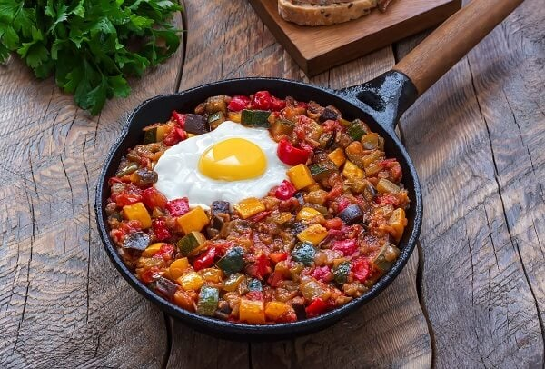

Pisto manchego

Ingredientes
Para 4 personas
- Tomate hermosos (o alguno más): ............... 4
- Cebolla picada: ............................................. 250 g
- Pimiento verde: ............................................. 200 g
- Pimiento rojo: ................................................ 200 g
- Diente de ajo: ................................................ 2
- Calabacín: ..................................................... 300 g
- Aceite de oliva virgen extra
- Pimienta negra molida
- Sal
Preparación
- Lava y corta todas las verduras en trozos pequeños.
- En una sartén grande, calienta aceite de oliva y sofríe la cebolla y el ajo hasta que estén dorados.
- Añade los pimientos y cocina durante 5 minutos.
- Agrega el calabacín y cocina otros 5 minutos.
- Por último, incorpora los tomates y cocina a fuego lento durante 20 minutos. Remueve ocasionalmente.
- Sazona con sal y pimienta al gusto. Sirve caliente acompañado de pan.